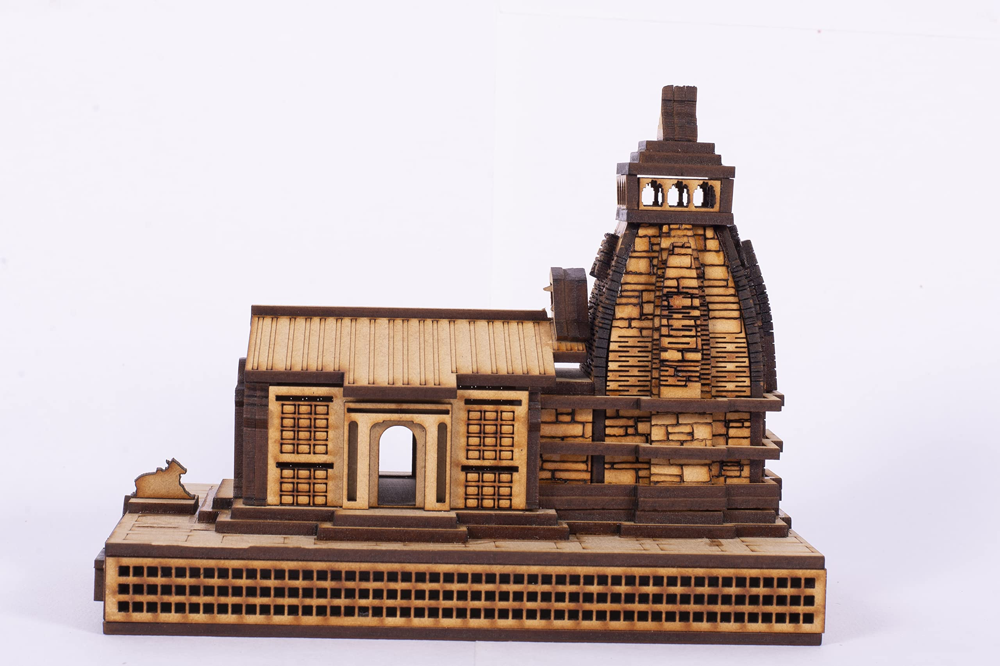

emple art in Uttarakhand feels like devotion carved into the mountains themselves. Surrounded by the Himalayas, these temples carry a quiet, powerful energy—simple yet deeply spiritual.The romance here is pure and sacred. There is no excessive decoration or luxury; instead, there is a strong sense of faith and connection with nature. The carvings and paintings feel timeless, as if they have grown along with the mountains, reflecting peace, strength, and devotion.
Uttarakhand is often called “Dev Bhoomi” (Land of Gods) because of its many temples. • Famous temples include Kedarnath Temple and Badrinath Temple • Temple art developed over centuries with strong religious influence • Reflects traditions of Shaivism and Vaishnavism These temples were not just places of worship—they were centers of art, culture, and community life.
Temple art in Uttarakhand combines architecture, carving, and painting: • Wood Carving Intricate designs on doors, pillars, and frames • Stone Architecture Strong structures built to withstand harsh mountain conditions • Simple Murals & Motifs Painted scenes of gods and symbols • Geometric & Floral Patterns Used for decoration and symbolism • Integration with Nature Designs often reflect the surrounding environment
Temple art was created by local craftsmen and artisans. • Skilled in woodwork and stone carving • Learned through apprenticeship and tradition • Art was seen as a form of devotion and service Unlike royal art, this is more spiritual and community-driven.